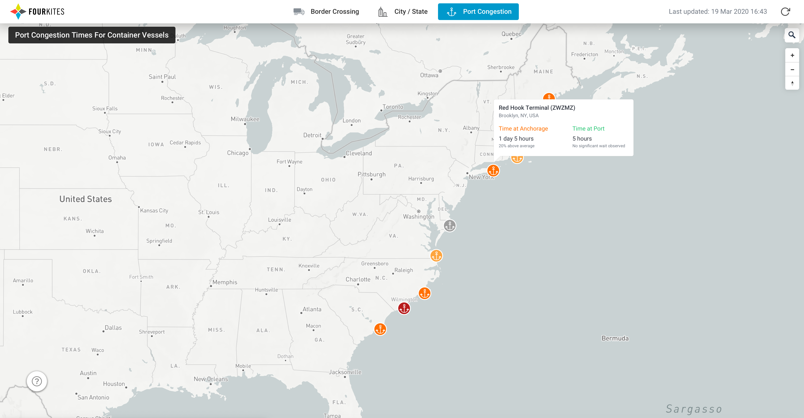
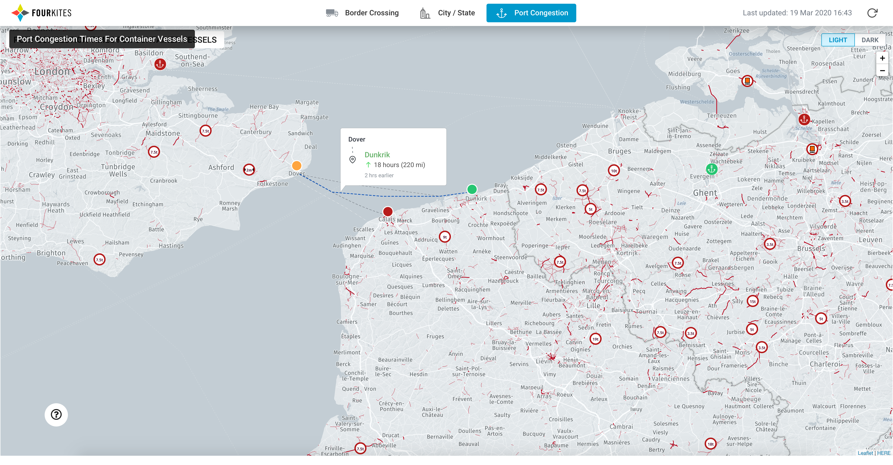
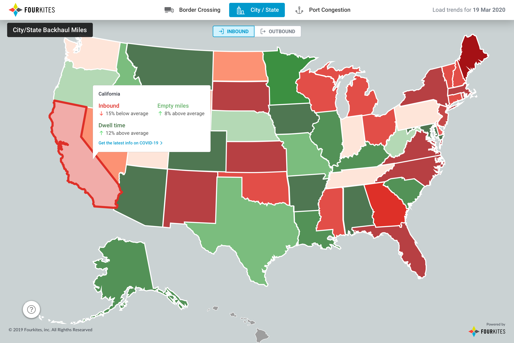
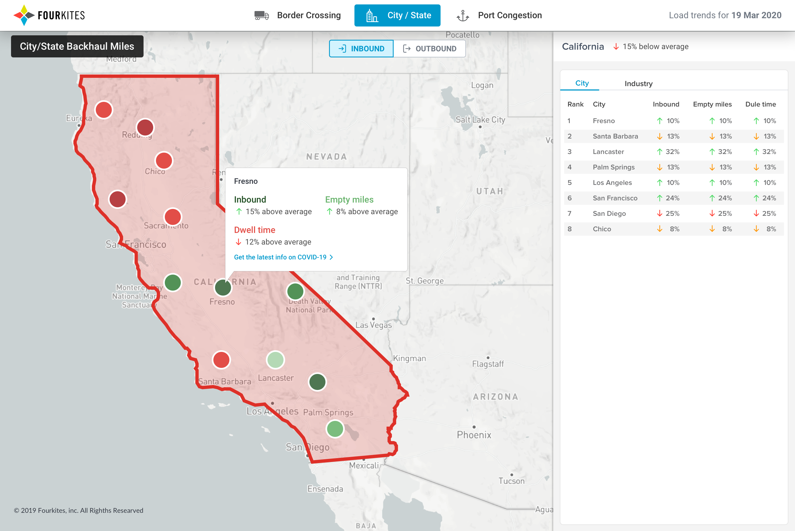

Cross-Border Delays: A Live Supply Chain Response Map
A free, interactive border-crossing and port-congestion map built in response to COVID-19 disruptions, covering the US, Mexico, Latin America, and Europe.
Design Leadership · Data Visualization · Public Tool · 2 minute read
During this unprecedented global pandemic, being able to track freight movement in real time became a top priority as shippers did their utmost to keep supply chains moving and deliver essential goods to their final destination. FourKites committed to helping our customers and the logistics community at large manage mounting challenges by publishing real-time data analysis, commentary on the latest news and trends across our network, and practical tips on how to manage a variety of supply chain strains.
Border crossing delays
Newly imposed border controls across the globe left drivers angry, goods stranded, and traffic backed up for miles. While instituted to keep communities safe and healthy, these controls also made it exceedingly difficult to keep stores fully stocked, particularly in places where cross-border commerce had been the norm for decades, such as Europe.
To bring greater visibility into border delays, we developed a free interactive map that gives companies new visibility into delays so they can act proactively to plan and optimize their supply chain operations. The interactive map, which details average wait times for trucks and ships, can be found at live.fourkites.com/border-crossing. We started this mapping experience with the US/Canada border, then later expanded it to Mexico, Latin America, and Europe as well.

Port congestion
Similar to the border crossing map, we created an interactive map for port congestion. The congestion times on this map are based on all the port congestion delays over the past 1 week, and the dwell times are based on all the dwell times over the past 1 month for the loads in FourKites' network. This map displays real-time insights on waiting for berth, waiting at port, import dwell, and export dwell status of the ports.
This map helps organizations understand when port congestion overseas is clearing, allowing them to more accurately estimate how long supplies will take to reach international shores.



Regional insights
The map, which is being updated continually and includes data covering cities and states throughout the US as well as Latin America, helps state governments more accurately understand the flow of goods into their region and enables them to reroute supply convoys to address product shortages.


Press announcements
- Bulk Transporter
- GlobeNewswire
- TruckingInfo